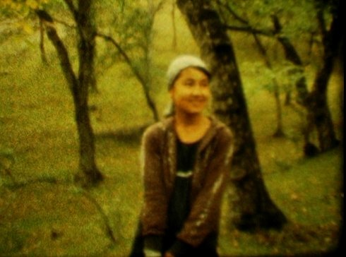

Djamilia

Aminatou Echard
|
84 min – Super-8mm auf HD – Kirgisisch, Usbekisch, Russisch,
Englisch, Französisch B+K+S: Aminatou Echard – SD: Gil Savoy – P+V: Laurence Rebouillon
|
friday 12 oct 6.30 pm werkstattkino
At the beginning, a woman’s voice can be heard, describing the self-confident and strong-willed Jamila, a young Kyrgyz woman who is the protagonist of Chingiz Aitmatov’s eponymous 1958 novel. It’s World War II and her husband is at the front, she’s unhappy in her arranged marriage and decides to break with tradition and elope with her great love.
The famous literary heroine Jamila turns out to be an ideal subject for director Aminatou Echard to start conversations with women in Kyrgyzstan and gain access to their world. The topic is by no means an innocuous one. For whether the women are speaking about Jamila or about their own lives, it quickly becomes clear how powerful the conflicts, longings, and desires for self-determination still are. Echard shot her film on silent Super-8 film, recording the sound separately, yet the materiality of the film never feels retro. Instead, the film connects literature, reality and the present. The result is a set of carefully composed portraits whose beauty reflects both the candour of Aitmatov’s novel and the strength of today’s Jamilas. (Berlinale 2018)
Aminatou Echard Born in Les Lilas, France in 1973. She studied Music, Performing Arts and Film Studies. In 2000, she completed a master’s degree in Ethnomusicology, and a year later a master’s degree in Documentary Film. Since 2006, she has led film education workshops. Djamilia is her first feature film.
|
| Films Djamilia 2018
|